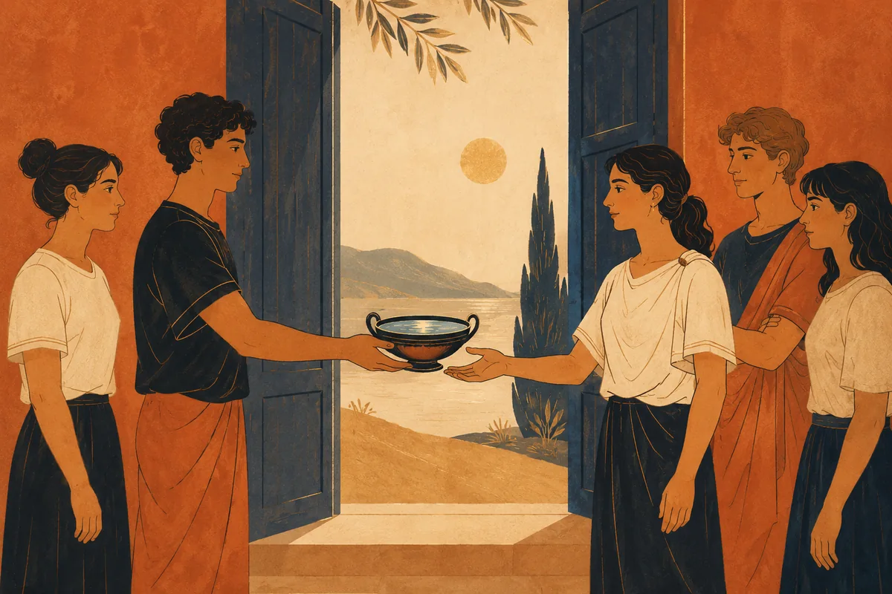
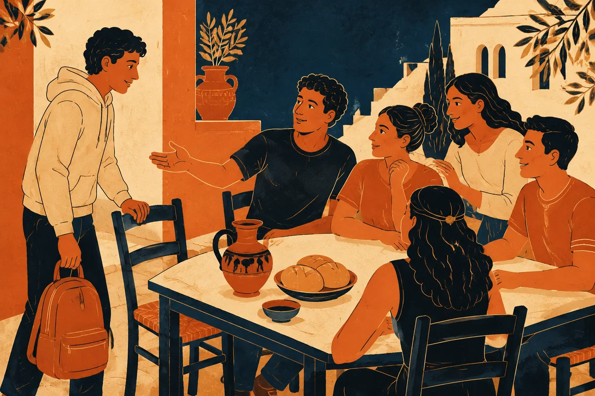

Cittadinanza · Prima tecnico grafico
Le parole diventano scelte
Cinque laboratori di cittadinanza: comunicare, giudicare, dissentire, affrontare il conflitto e riconoscere l’altro. Ogni problema dialoga con un testo del percorso antologico.

Antologia · 10 lezioniRacconti, brani e strumenti per interpretarli.Cittadinanza · 5 lezioniCasi contemporanei, discussione e argomentazione.
Domande per il presente
I rimandi ai testi aiutano a porre domande. Le differenze fra il mondo antico e il presente restano esplicite.

Cittadinanza · C1
Comunicare: quale storia mostri?
Informazione, inquadratura, stereotipi e responsabilità dell’autore

Cittadinanza · C2
Giudicare: quanto sappiamo davvero?
Prove, inferenze e responsabilità personale
Cittadinanza · C3
Dissentire: come si contesta una regola?
Legge, dignità, coscienza e argomentazione pubblica

Cittadinanza · C4
Conflitto: fermare la catena delle ritorsioni
Scelte, promesse e riconoscimento dell’avversario

Cittadinanza · C5
Appartenere: chi può raccontare chi sei?
Ospitalità, identità e riconoscimento